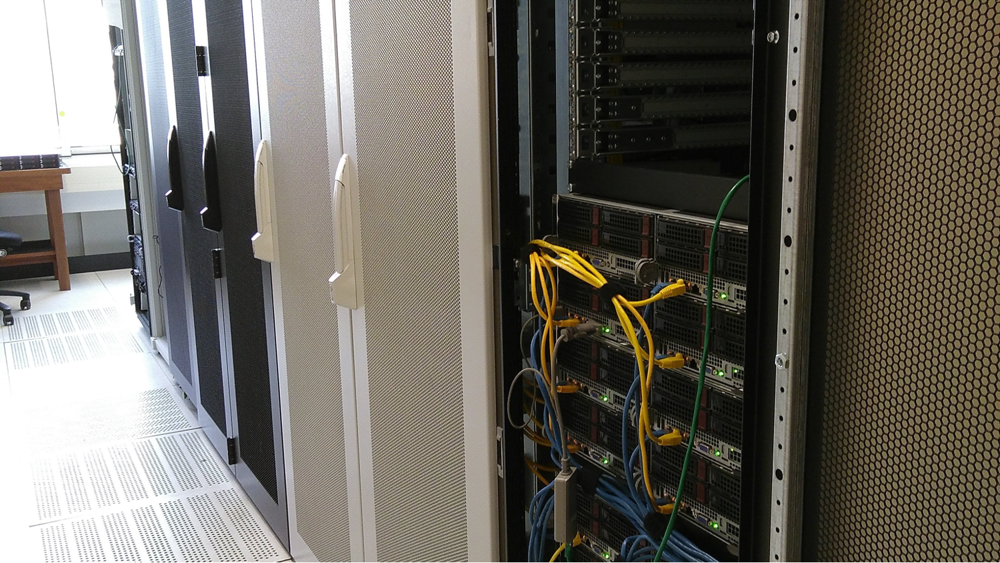

High-Performance Computing Facilities
BAZIS HPC
The BAZIS is a compute cluster for research at VU Amsterdam. It provides a service between the general facilties at the SURF HPC center and the desktop. It is a heterogenious system composed of clusters and servers from research departments.
In this topic you will find information to get you started and best practices. Clustercomputing can be very powerfull and useful skill to add to your toolbox and get more science done.
Also take a look at the SURF wiki about Snellius, it contains a lot of information which applies to Bazis as well.
Information and how to get an account can be found on 🔒 VU Service Portal under IT > Research > HPC Cluster Computing
BAZIS is maintained by IT for Research.

Requesting access
To access the cluster you can contact your department cluster manager, they will request an account for you with the IT for Research team (ITvO).
Setup
Your first time
When you get your account you will receive a temporary password, which you can use when you connect to the cluster using ssh. To log in to the cluster you first need to log in to the VU network (ssh.data.vu.nl) and then “hop” to the actual cluster (bazis.labs.vu.nl). For ssh.data.vu.nl you use your VUnetID and VUnetID password. For bazis.labs.vu.nl, you use your VUnetID and cluster password (given by ITvO). This does NOT work in the browser, instead use the tools below.
Connecting with SSH
Use your favourite SSH client to login at \<VUNETID\>@bazis.labs.vu.nl. Example clients are MobaXterm (Windows) and iTerm2 (macOS). Direct access is only possible from the Campus or from SURF. From other network locations, first connect to the stepstone \<VUNETID\>@ssh.data.vu.nl, or use eduVPN Institutional Access (below). Here we provide the steps to connect to the cluster using MobaXterm.
- Download and install MobaXTerm from mobatek.net.
- Open MobaXTerm and click on Session
- Enter the Basic SSH settings as follows:
- Remote host:
bazis.labs.vu.nl - Tick “specify username”
- Enter your username (VUnetID)
- Remote host:
- Go to “Network settings” and click SSH gateway (jump host)
- Enter the following details and click OK
- Gateway host:
ssh.data.vu.nl - Enter your username (VUnetID)
- Gateway host:
- Save the settings. When not connected automatically, you can click on User sessions, and double click “bazis.labs.vu.nl (VUNETID)”
- You will be asked for a password for “ssh.data.vu.nl”. This is your NORMAL VUNETID password, NOT the cluster password your received from ITVO.
- If not connected automatically, connect to the server again. Now you will see a terminal window which asks for another password. Here you should enter the CLUSTER password that you received from ITVO. Note that you will not see the cursor moving when typing. This is normal. When you finished typing your password hit ENTER.
- You will now see a terminal window, similar to this one. On connecting for the first time, you will be asked to change your CLUSTER password. Enter your CLUSTER password, then enter a new password (this can be identical to your VUNETID password).
- Congratulations, you are now connected to the cluster! The next steps are to set up your scripts and data!
As an alternative, you can use eduVPN to connect to the VU network, however the above configuration is recommended and generally works best in the long term. You can find the client on the eduVPN pages. Start eduVPN and choose Institute Access to connect. You will need to enable Multi-Factor Authentication (MFA). Students can activate MFA at the servicedesk (🔒 kb-item 11809).
Running your first Python script
Here, we go through some steps to run your first script. We provide instructions for Python. If you run R or another language we still recommend you to follow these steps first. They do not require a complex setup. Then once you got that down, to start working with your own. First we will run a simple Python script that prints “hello world!” to the console, and ensure that it runs before we go to more advanced methods.
- Right click on the file explorer of MobaXTerm on the left, and click “New empty file”.
- Call the file test.py and click OK.
- Double click the new file in the file explorer, after which the MobaTextEditor will open. In the file you can write
print("hello world!"). - Save the file, click “Yes” to sync the file to the server, and wait for it to synchronize.
- In the terminal type
python test.py. - You should see the output
hello world!printed to the console.
Your first script was just executed on the login “node”. A node can be thought of as a single computer of the cluster. This login node should only be used for doing very minor things, and any command you execute only runs while you are connected to the server. In the next steps you will learn how to execute a so-called “job” on one of the other nodes using slurm. A job can execute in the background, and if configured correctly, you will receive an email when the job is done.
- Create a new file called
test.sh(just like you did before), and enter the following in the file. Make sure to replace<YOUR-EMAIL>@vu.nlwith your own email. When you copy the contents of this file on Windows you may need to set the “format” to Unix, which can be done using the top menu of the MobaXtermEditor (format -> UNIX).
#!/bin/bash
#SBATCH --job-name=my_job
#SBATCH --ntasks=1
#SBATCH --cpus-per-task=1
#SBATCH --time=05:00:00
#SBATCH --mem-per-cpu=9000
#SBATCH --output=output.out
#SBATCH --mail-type=ALL
#SBATCH --mail-user=<YOUR-EMAIL>@vu.nl
source ~/.bashrc
python test.py- In additon, edit the Python script as follows. This ensures that the script will run for a while (60 seconds). This is to simulate a long running job.
import time
print("starting job...")
time.sleep(60)
print("hello world!")- Now, in the terminal type
sbatch test.sh, which should give the following output “Submitted batch job <JOBID>”. - Your job is now submitted and executed on the more powerful computational nodes. You can check whether it is running by typing “squeue”. You should see a short or long list of jobs from all users on the cluster. Yours should be included in the list. In addtional, you should have received an email that the job started.
- While your job is running you can check the output of your job in the file “output.out”, as specified in the test.sh-script (see above). This file should contain “starting job…” and after 60 seconds, “hello world!” should also appear, and you will receive another email. Your job is now finished.
- Congratulations, you can now use the cluster! You can adapt this to your own scripts. The rest of this manual shows more useful slurm commands, advanced set up of job scripts, installing of custom Python and R versions, data management etc. etc.
Data transfer
MobaXterm has an integrated FTP file browser. Once you have logged in to the cluster, you will see the file browser to the left of the terminal window, where it shows the contents of your home folder. You can browse through these folders, and drag-and-drop files and folders between this FTP file browser and the Windows File Explorer. Alternatively, you can use the download/upload buttons at the top of the FTP file browser window. A green refresh button is also located there to refresh the contents of the current folder. You can also open files in the FTP file browser to edit them directly. Upon saving, you’ll be asked if you want change these files on the HPC system.
MobaXterm works fine for most small data transfers. If you want to transfer a large number of files, or large files, you may want to use a dedicated FTP client. We recommend using WinSCP, Cyberduck or FileZilla, which you can configure as follows.
WinSCP
- Download and install WinSCP from winscp.net.
- Click the “New Session” button.
- Fill in the hostname
bazis.labs.vu.nland your username (VUNETID). - Click the “Advanced” button, and go to the “Connection” -> “SSH” -> “Tunnels” section.
- Tick the “Connect through SSH tunnel” box and fill in the host name
ssh.data.vu.nland your username. Ensure that the given port is 22. - Click “OK” and “Save” to save the session. Do this BEFORE you click “Login”, otherwise all your settings are forgotten next time.
- You will be asked for your passwords. Similar to connecting with MobaXterm, you will first be asked for your VUNETID password (when connecting to
ssh.data.vu.nl), and then for your cluster password (when connecting tobazis.labs.vu.nl).
Using Slurm
Useful commands
See jobs in the queue for a given user
squeue -u usernameShow available node features
sinfo -o "%20N %10c %10m %25f %10G "Submit a job
sbatch scriptShow the status of a currently running job
sstat -j jobIDShow the final status of a finished job
sacct -j jobIDCancel a job
scancel jobidCancel all jobs for a user
scancel -u usernameDisplays some statistics of a running or previously running job, including maximum memory usage. This can be useful especially to learn about the amount of memory required to run the job (again)
seff <JOBID>Displays some control stats of running job, e.g., number of CPUs used
scontrol show job <JOBID>Input and output
Any script you run on the cluster, can read all the files in your home directory, and also create files in the home directory. These files are stored on a network drive, and thus file operations can be slow. For small files this is no issue, but when you work with large files, it is recommended to use the scratch directory for intermediate files that are not needed after the job is done. The scratch directory is a fast disk, which is not backed up. The scratch directory location can be found in the environment variable $TMPDIR. You can access this environment variable in your scripts, for example in Python:
import os
with open(os.getenv("TMPDIR") + "/test.txt", "w") as f:
f.write("hello world!")You can also all or a selection of files from the scratch directory to your home directory after the job is done. This can be done by including the cp command in your slurm-file. For example, to copy all files from the scratch directory to your home directory, you can use the following command:
cp $TMPDIR/* ~/Data recovery
Most departments have a backup system in place, but configurations may vary. For example, an automatic backup may be made each day with a rentention period of 7 days, and a weekly backuup with a retention period of 5 weeks.
You can find all thour data under .zfs/snapshot. You can then copy your data from there to your home folder.
cd ~/.zfs/snapshot
lsNote that the folder is hidden, so you need to use ls -a to see it, or configure your file browser to show hidden files.
Data deletion
You can only access the cluster with you VUNETID and thus when you are no longer affiliated with VU Amsterdam, your account will be disabled. However, it is good practice to clean up your data when you are done with it. Depending on the department, data may be deleted after a certain period.
Best practices
- Make use of fast scratch directory (
$TMPDIR). - Don’t run large computation on the login nodes! It negatively impacts all cluster users. Grab a compute node with
srun --ptybash option.
Constraints
The SLURM constraint option allows for further control over which nodes your job can be scheduled on in a particular parition/queue. You may require a specific processor family or network interconnect. The features that can be used with the sbatch constraint option are defined by the system administrator and thus vary among HPC sites.
Constraints available on BAZIS are cpu architecture and gpu. Example (single constraint):
#SBATCH --constraint=zen2Example combining constraints:
#SBATCH --constraint="zen2|haswell"Computer architecture
The parts of a modern computer we need to understand to apply to running jobs are listed here. (Note: This is way oversimplified and intended to give a basic overview for the purposes of understanding how to request resources from Slurm, there are a lot of resources out there to dig deeper into computer architecture.)
Board
A physical motherboard which contains one or more of each of Socket, Memory bus and PCI bus.
Socket
A physical socket on a motherboard which accepts a physical CPU part.
CPU
A physical part that is plugged into a socket.
Core
A physical CPU core, one of many possible cores, that are part of a CPU.
HyperThread
A virtual CPU thread, associated with a specific Core. This can be enabled or disabled on a system. On BAZIS hyperthreading is typically enabled. Compute intensive workloads will benefit to disable hyperthreading.
Memory Bus
A communication bus between system memory and a Socket/CPU.
PCI Bus
A communication bus between a Socket/CPU and I/O controllers (disks, networking, graphics,…) in the server.
Slurm complicates this, however, by using the terms core and cpu interchangeably depending on the context and Slurm command. –cpus-per-taks= for example is actually specifying the number of cores per task.
Slurm example jobs
Simple job
#!/bin/bash -l
#SBATCH -J MyTestJob
#SBATCH -N 1
#SBATCH -p defq
echo "== Starting run at $(date)"
echo "== Job ID: ${SLURM_JOBID}"
echo "== Node list: ${SLURM_NODELIST}"
echo "== Submit dir. : ${SLURM_SUBMIT_DIR}"
echo "== Scratch dir. : ${TMPDIR}"
cd $TMPDIR
# Your more useful application can be started below!
hostnameWorkspace
scratch tmpdir
Each slurm job will have a fast scratch dir allocated on the nodes which is deleted after finishing the job. use the $TMPDIR virable to use this space for example to store intermediate results or work on many files.
Python virtual environments
Python has many powerfull packages. In scientific computing many packages may be used in a single project. To manage many python packages often a package manager as conda is used.
On a HPC system we do not prefer conda as it does not use optimised binaries and the cache can take up a lot of space, but we understand it is usefull in some cases and try to help.
Working with virtual environments further makes the python environment better to manage
- A virtual environment is a named, isolated, working copy of Python that that maintains its own files,
- directories, and paths so that you can work with specific versions of libraries or Python itself without affecting other Python projects.
- Virtual environmets make it easy to cleanly separate different projects and avoid problems with different dependencies and version requirements across components.
In short:
- use virtualenv (preferred) or conda
- create an isolated environment
- Install packages
- Activate a virtual environment
- Deactivate a virtual environment
- Delete a virtual environment
Adding a requirements file
Python requirements files are a great way to keep track of the Python modules. It is a simple text file that saves a list of the modules and packages required by your project. By creating a Python requirements.txt file, you save yourself the hassle of having to track down and install all of the required modules manually.
A reuirements file is a simple text file, which looks like this.
tensorflow==2.3.1
uvicorn==0.12.2
fastapi==0.63.0Installing modules from a requirements file is easy as.
pip install -r requirements.txtA requirements file can also be generated with:
pip freeze > requirements.txtSee the article referenced below for more information.
Portable scripts
The first line in a script usually starts the interpreter and is called the Shebang. It is recommended to use /usr/bin/env, which can interpret your $PATH. This makes scripts more portable than hard coded paths..
#!/usr/local/bin/python
Will only run your script if python is installed in /usr/local/bin.#!/usr/bin/env python
Will interpret your $PATH, and find python in any directory in your $PATH.So your script is more portable, and will work without modification on systems where python is installed as /usr/bin/python, or /usr/local/bin/python, or even custom directories (that have been added to $PATH), like /opt/local/bin/python.
Further Reading
R environment
R has many powerfull scientific packages and a strong community. Installing and maintaining packages for R can be hard. On BAZIS the Bioconductor suite is installed and can be loaded with the appropiate module environment.
When first running R on a Cluster some changes in the workflow are required making the transition from working interactively from a terminal to scripts in batchmode.
Errors
Pretty much all the time we get errors. Errors can be simple e.g.syntax error, R/python version error or more complex e.g. a problem in our data. In either case, please pay attention to what the error says carefully, because often the solution is in that message or at least it is the starting point of the solution while debugging your code. If it is an error you have not seen before, simply google it. Often you will find a solution in websites like stackoverflow.
Tips and Caveats
Matlab
Matlab has several features to work in batch mode on a HPC cluster. Assuming you know how to create matlab scripts we start simply by executing matlab interactively on a compute node
Interactive
Request resources (1 node, 1 cpu) in a partition
srun -N 1 -p defq --pty /bin/bash
module load matlab/R2023a
cd your/data/Here is an example of a trivial MATLAB script (hello_world.m):
fprintf('Hello world.\n')Run with matlab using only one computational thread.
$ matlab -nodisplay -singleCompThread -r hello_world
Hello world.
>>Matlab waits at the end of the script if there is no exit. In an compute job this would keep the job running untill the wallclocklimit so we add an exit at the end. The convenient “-batch” option combines these options.
-batch MATLAB_command - Start MATLAB and execute the MATLAB command(s) with no desktop
and certain interactive capabilities disabled. Terminates
upon successful completion of the command and returns exit
code 0. Upon failure, MATLAB terminates with a non-zero exit.
Cannot be combined with -r.matlab -batch hello_worldBatch mode
Combining this in a slurm script we can queue matlab workloads.
#!/bin/bash -l
#SBATCH -J MyMatlab
#SBATCH -N 1
#SBATCH --cpus-per-task=1
#SBATCH -p defq
#SBATCH --output=%x_%j.out
#SBATCH --error=%x_%j.err
#SBATCH --mail-type=END,FAIL
#SBATCH --mail-user=<YOUR EMAIL>
# Note: for parallel operations increase cpus-per-task above
# Note 2: output and error logs can be given absolute paths
echo "== Starting run at $(date)"
echo "== Job ID: ${SLURM_JOBID}"
echo "== Node list: ${SLURM_NODELIST}"
echo "== Submit dir. : ${SLURM_SUBMIT_DIR}"
echo "== Scratch dir. : ${TMPDIR}"
# cd $TMPDIR
# or change to a project folder with matlab file e.g. hello_World.m
# cd your/data
# Load matlab module
module load 2022 matlab/R2023a
# execute
matlab -batch hello_worldParpool
Reading
Acknowledging the cluster
When you use the cluster for your research, please acknowledge the cluster in your publications. You can use the following text:
We kindly acknowledge sponsoring by the VU HPC Council and the IT for Research (ITvO) BAZIS Linux computational cluster at VU Amsterdam.
Advanced topics
Using SSH keys
SSH keys are an alternative method for authentication to obtain access to remote computing systems. They can also be used for authentication when transferring files or for accessing version control systems like github.
The cluster uses ssh keys to manage batch jobs.
On your workstation create ssh key pair ssh-keygen -t ed25519 -a 100
-a(default is 16): number of rounds of passphrase derivation; increase to slow down brute force attacks.-t(default is rsa): specify the cryptographic algorithm. ed25519 is faster and shorter than RSA for comparable strength.-f(default is /home/user/.ssh/id_algorithm): filename to store your keys. If you already have SSH keys, make sure you specify a different name: ssh-keygen will overwrite the default key if you don’t specify!
If ed25519 is not available, use the older (but strong and trusted) RSA cryptography: ssh-keygen -a 100 -t rsa -b 4096
When prompted, enter a strong password that you will remember.
Note: on windows you can use MobaKeyGen from MobaXterm, but on Windows 11 Powershell or Command Prompt works as well.
In your ~/.ssh directory you will find a public and private key. Make sure to keep the private key safe as anyone with the private key has access.
Now, when you add your public key to the ~/.ssh/authorized_keys file in a remote system, your key will be used to login.
You can either use copy-paste or the ssh-copy-id command:
$ ssh-copy-id user@remote-host
The authenticity of host 'remote-host (192.168.111.135)' can't be established.
ECDSA key fingerprint is SHA256:hXGpY0ALjXvDUDF1cDs2N8WRO9SuJZ/lfq+9q99BPV0.
Are you sure you want to continue connecting (yes/no)? yes
/usr/bin/ssh-copy-id: INFO: attempting to log in with the new key(s), to filter out any that are already installed
/usr/bin/ssh-copy-id: INFO: 2 key(s) remain to be installed -- if you are prompted now it is to install the new keys
user@remote-host's password:
Number of key(s) added: 2Now try logging into the machine, with: “ssh ‘user@remote-host’” and check to make sure that only the key(s) you wanted were added.
Forwarding X
Fix Warning: Remote Host Identification Has Changed
If you are sure that it is harmless and the remote host key has been changed in a legitimate way, you can skip the host key checking by sending the key to a null known_hosts file:
ssh -o "UserKnownHostsFile=/dev/null" -o "StrictHostKeyChecking=no" username@bazis.labs.vu.nlTo make the change permanent remove the offending host key from your ~/.ssh/known_hosts file with:
ssh-keygen -R "hostname"References:
- hpc carpentry
- Comparing SSH keys
- public key cryptography for non geeks
- disable ssh host key checking
Connect to VU Yoda/iRODS with icommands
Yoda is a data storage solution for research data at VU Amsterdam. You can use the icommands to upload and download data from Yoda directly from the cluster.
To do so, you need to configure iRODS, such that it links to your account on Yoda by taking the following steps:
Point the cluster to the Yoda server by creating a file called
.irods/irods_environment.jsonin this folder. The file should look like this, replacing <EMAIL-ADDRESS> with your VU email:{ "irods_host": "portal.yoda.vu.nl", "irods_port": 1247, "irods_home": "/vu/home", "irods_user_name": "\<EMAIL-ADDRESS\>", "irods_zone_name": "vu", "irods_authentication_scheme": "pam", "irods_encryption_algorithm": "AES-256-CBC", "irods_encryption_key_size": 32, "irods_encryption_num_hash_rounds": 16, "irods_encryption_salt_size": 8, "irods_client_server_negotiation": "request_server_negotiation" }Then, you need to set a password on the Yoda portal, and use this password to authenticate the iRODS connection. Go to
https://portal.yoda.vu.nl/user/data_access, and generate a password.You can connect to Yoda using the
iinitcommand. You will be prompted for the password you just generated.
Finally, you can use the icommands to navigate and transfer data between the cluster and Yoda. These commands are generally similar to Linux commands .
For example, to list the contents of your home directory on Yoda, you can use the ils command:
ilsThis will show you the contents of your home directory on Yoda. The project folders you have access to is located at /vu/home.
To set the current working directory to a specific folder on Yoda, you can use the icd command (make sure to replace <PROJECT_FOLDER> with the folder you want to navigate to):
icd /vu/home/<PROJECT_FOLDER>To upload a file to Yoda, you can use the iput command with . being the current working directory (you can also set the destination folder by replacing . with the desired folder):
iput file.txt .Then, to delete the file from the cluster, you can use the irm command:
irm file.txtTo synchronize a local directory with a directory on Yoda, you can use the irsync command. In this command i: refers to the iRODS server. Optionally specify -r to recursively copy the contents of the subdirectories. The following example recursively copies the contents of the local directory test to the directory i:test on Yoda:
irsync -r test i:testYou can find an overview of all icommands here.